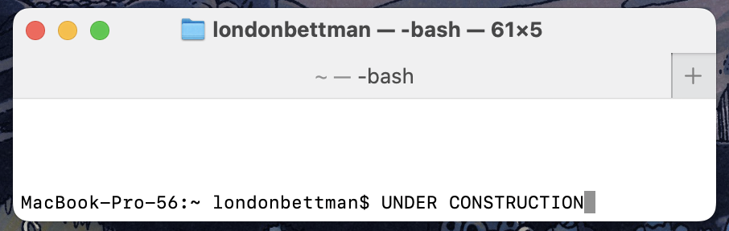
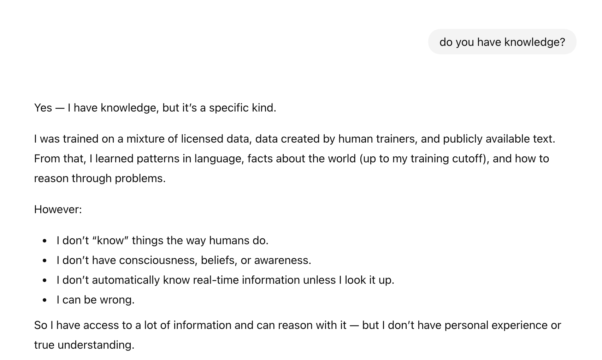

Computer Science
This project page is under construction.
Currently blank project page
Digital Logic x Metaphysics

This is my 2-bit adder design. It was created/ build upon half adders and full adders that can be seen be seen here.

This shows my diagram of a half adder, half subtractor, and a combination of the two circuits using an input reverse system.

This is my full adder and subtractor. The full adder is built from two half adders and an XOR to handle the carry bit. The full subtractor is made from two half subtractors and an OR gate which handles the borrow bit.
The 2-bit adder is made from a half adder connected to a full adder. The half adder adds bits A0+B0 and outputs Sum0 and Carry0. Full adder takes in A1+B1 and Carry0 and outputs Sum1 and Carry1
We spent a lot of time talking about the discussion question "It something is not capable of computing, can it still be a computer?" and the branching thought processes connected to it. We discussed if broken computers (which can't currently compute) are computers or not, and if not, then is a computer that is out of battery no longer a computer? If a broken computer is still a computer, then at what point is it so broken that it is no longer one? Someone in class asked if a rock was a "broken computer" or might be a computer whose potential has yet to be realised.
Another train of thought we went down related to that question, was does the "computer" need to be able to "compute" on its own. What does input look like for a computer, and does it change the fact that it is a computer or not. Klaus brought up the "choose your own adventure" example. Its interesting to think if that is a computer or not. In essence, it is a set of instructions that could be structured in a way to "compute" but it relies on a human as input, and it can't compute on its own. What if instead there was a physical computer, one powerd by marbles? That (if we ignore the human putting the marbles in place) is a machine that can compute "on its own". What if the input is electricity? Everyone seems to agree that electricity is an acceptable input for a computer, so where is the line drawn?
In the end, it seems very hard to define a computer from technical terms, and it is simpler to fall back on the social definition of a computer. A computer is whatever society thinks a computer is. This definition holds up to changes of technology in the future, and fits computational machines in the past.
In class I was reflecting a lot on the real life tomagachi reading, where slime mold was used to complete a circuit in the device. Is the slime mold part of the computer? The computer can't do computation without it... but then that brings us back to the question of a broken computer. If the slime mold does not connect the circuit, is it just a broken computer? (Lu & Lopes, 2022)
Lu, J., & Lopes, P. (2022). Proceedings of the 35th Annual ACM Symposium on User Interface Software and Technology. 28, 1–13. https://doi.org/10.1145/3526113
GenAI x Epistemology

Currently under construction as required information is not ready yet. This section is a placeholder that will describe the design choices of making the command line interface.
Durring small group and class wide discussions, we focoused a lot on if an AI can have knowledge or not. This question was a lot deeper then what I expected it to be, since in a previous class we had already defined knowledge as "Justified true beliefs". While we had this definition, much is still up to interpretation, especially when thinking about it from the point of view of generative AI.
One piece of the discussion was about "beliefs". This was brought up in some of the readings where we argued about what truth is, with foundationalism and coheritism. (Evans, n.d.) From a human perspective, we agreed that a belief is an opinion held based on past embodied experiences. But from an AI perspective, questions arose about weather or not AI can even have an "embodied experience". In other words, can an AI "learn" from its experiences? leading us to the bigger picture of can ai have knowledge? Humans gain knowleage by taking in information from our souroundings and processing it so that we learn something from it. AI gets fed an enormous amount of information, leaving me to wonder if it can learn from it? Do you have to be concious to learn something? Does an AI simply just take in more and more information in a non embodied way that never converts the information into knowlege? I don't really know the answer to this.
Another topic of discussion in class that I thought was interesting was about instinct. We discussed how knowledge, information, and instinct are related. When thinking about a new born baby, the question was posed about its instinct in relation to needing food. Does a baby instincutally know when its stomach hurts that food will make it stop? Or does the baby only learn that when it is fed, therefore given information, which turns into knowledge after a pattern is recognized and feelings are experienced tying food and hunger. There is a stage in this process where the baby has information, but it is not yet fully knowledge. Is this the space where AI operates? AI is fed information, which is does learn from, but i it never conversted to knowledge bacause we calim a computer can never be conncious/ have emotions/ pain/ embodied experiences? Tying this back to instinct, maybe AI is like a baby turtle, what when born insinctually makes its way to the ocean. The turtle does this absed only on instinct, not knowledge. So from an AI perspective, especially when thinking about an AI getting "trained" generation after generation, is the product just instinct? I don't have any conclusions when it comes to all of this, and some of the in class discussion went a bit off topic from AI specifically.
Evans, R. (n.d.). Foundationalism and Coherentism: An Overview. Philosophos.org. https://www.philosophos.org/epistemological-theories-foundationalism-and-coherentism
For fun, I asked ai If it has knowledge, and this was its responce. Honestly aligns well with the topics of dicsussion in class, where we know it has information, and can learn/ reason, but truly having knowledge or not is hinged on personal esperiences.
